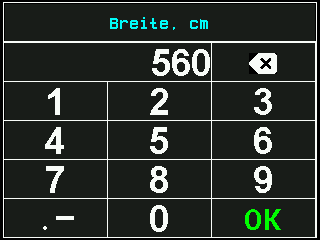

Der Ziffernblock
Wie Sie am Hectare Mini eine Zahl eingeben — was das Fenster zeigt, welche Tasten wirken und die Fallen des leeren Feldes und der Werte außerhalb des Bereichs.
Manche Werte lassen sich als ganze Zahl eingeben, statt mit „PLUS“ und „MINUS“ schrittweise verstellt zu werden. In einem Menü steht ein solcher Wert zwischen -[ und ]+; drücken Sie darauf „MENU“, und der Ziffernblock öffnet sich. Er öffnet sich auch von selbst, wo Schritte keinen Sinn ergeben — für die Masse am Ende einer Motorkalibrierung, für die Zahl der Löcher in der Scheibe eines Dosiermotors und für einen Zugangscode.

Was der Ziffernblock zeigt

- Name des Parameters, in Hellblau. In manchen Fenstern die ganze Aufforderung, über mehrere Zeilen.
- Die Zahl. Sie öffnet sich mit dem aktuellen Wert (leer, wenn der Wert 0 ist) und wächst beim Eingeben nach links.
- Rückschritt. Eine Berührung löscht das letzte Zeichen; Berühren und Halten löscht die ganze Zahl.
- Ziffern. Berühren Sie sie — die Ziffern werden nur auf dem Bildschirm eingegeben.
- Taste .−. Setzt das Komma. Berühren und Halten schaltet das Minuszeichen um, wo der Wert negativ sein darf.
- „OK“, in Grün. Übernimmt die Zahl und schließt den Ziffernblock.
Eine berührte Taste leuchtet nicht auf. Dass die Berührung angekommen ist, sehen Sie an der Zahl, und Sie hören es, wenn der Tastenton eingeschaltet ist.
Eine Zahl eingeben
Drücken Sie auf einem Menüpunkt, dessen Wert zwischen -[ und ]+ steht, „MENU“. Der Ziffernblock öffnet sich.
Berühren und halten Sie den Rückschritt. Der alte Wert wird gelöscht.
Berühren Sie die Ziffern. Jede reiht sich rechts an die Zahl an.
Hat der Wert Zehntel, berühren Sie .− und geben Sie die Stellen nach dem Komma ein.
Prüfen Sie die Zahl und berühren Sie dann „OK“ oder drücken Sie „MENU“. Der Ziffernblock schließt sich, und das Menü zeigt den neuen Wert.
„BACK“ verlässt den Ziffernblock, ohne etwas zu ändern. Die übrigen Tasten und eine Berührung außerhalb der Tasten bewirken nichts.
Regeln des Ziffernblocks
- Das Komma wirkt nur dort, wo der Wert Zehntel hat, zum Beispiel bei „Minimum, U/min“ und „Maximum, U/min“ eines Dosiermotors. Bei ganzen Zahlen bewirkt die Taste .− nichts.
- Ein Komma je Zahl. Eine zweite Berührung von .− bewirkt nichts, solange Sie das erste Komma nicht gelöscht haben.
- Die Nachkommastellen sind begrenzt auf das, was der Wert kennt. Geben Sie weniger ein, ergänzt das Panel Nullen: mit einer Stelle wird aus 12 die 12,0.
- Die Länge ist begrenzt durch die Breite des Feldes. Ist es voll, bewirken weitere Ziffern nichts.
Ihre Maschine tut etwas, das diese Seite nicht beantwortet? Schreiben Sie an support@agriwelt.com — es antwortet ein Ingenieur.